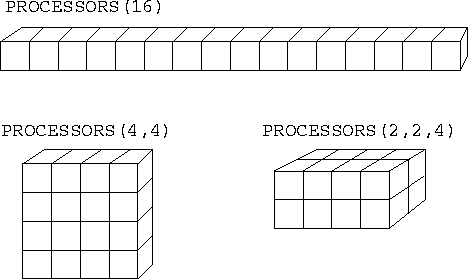
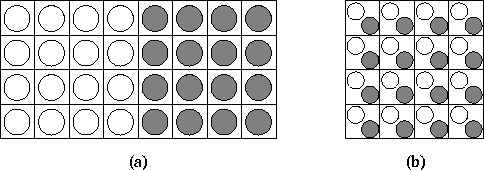
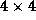
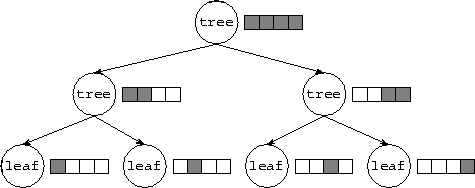

![[DBPP]](pictures//asm_color_tiny.gif)


![[Search]](pictures//search_motif.gif)
Process blocks and do-loops define concurrent processes; channels and mergers define how these processes communicate and synchronize. A parallel program defined in terms of these constructs can be executed on both uniprocessor and multiprocessor computers. In the latter case, a complete program must also specify how processes are mapped to processors. Recall from Chapter 2 that this is an important part of parallel algorithm design.
FM provides three mapping constructs. The PROCESSORS declaration specifies the shape and dimension of a virtual processor array in which a program is assumed to execute, the LOCATION annotation maps processes to specified elements of this array, and the SUBMACHINE annotation specifies that a process should execute in a subset of the array. An important aspect of these constructs is that they influence performance but not correctness. Hence, we can develop a program on a uniprocessor and then tune performance on a parallel computer by changing mapping constructs. This is consistent with the PCAM design methodology discussed in Chapter 2, in which mapping is the fourth and final stage of the design process.
FM's process placement constructs are based on the concept of a virtual computer , a collection of virtual processors that may or may not have the same topology as the physical computer(s) on which a program executes. For consistency with Fortran concepts, an FM virtual computer is an N -dimensional array, and the constructs that control the placement of processes within this array are modeled on Fortran's array manipulation constructs.
The PROCESSORS declaration is used to specify the shape and size of the (implicit) processor array on which a process executes. This declaration is similar in form and function to the array DIMENSION statement. It has the general form PROCESSORS(I,...,I) ,
where  and the I have the same form as the arguments
to a DIMENSION statement. See Figure 6.7 for
some examples.
and the I have the same form as the arguments
to a DIMENSION statement. See Figure 6.7 for
some examples.

Figure 6.7: Three different PROCESSORS configurations, all
involving 16 processors.
The PROCESSORS declaration in the main (top-level) program specifies the shape and size of the virtual processor array on which that program is to execute. The mapping of these virtual processors to physical processors is specified at load time. This mapping may be achieved in different ways on different computers. Usually, there is a one-to-one mapping of virtual processors to physical processors. However, it can sometimes be useful to have more virtual processors than physical processors, for example, if a multicomputer program is being developed on one processor. The mapping of virtual processors to physical processors is not defined in FM, but is typically specified using a configuration file or command line arguments.
A PROCESSORS declaration in a process definition specifies the shape and size of the virtual processor array on which that particular process is to execute. As with a regular array passed as an argument, this processor array cannot be larger than that declared in its parent, but it can be smaller or of a different shape.
The LOCATION annotation is similar in form and function to an
array reference. It has the general form
LOCATION(I, ..., I )
)
where and the I have the same form as the
indices in an array reference, and specifies the processor on which
the annotated process is to execute. The indices must not reference a
processor array element that is outside the bounds specified by the
PROCESSORS declaration provided in the process or subroutine in
which the annotation occurs.
have the same form as the
indices in an array reference, and specifies the processor on which
the annotated process is to execute. The indices must not reference a
processor array element that is outside the bounds specified by the
PROCESSORS declaration provided in the process or subroutine in
which the annotation occurs.
The following code fragment shows how the ring pipeline code of Program 6.2 might be extended to specify process placement. The PROCESSORS declaration indicates that this program is to execute in a virtual computer with P processors, while the LOCATION annotation placed on the process call specifies that each ringnode process is to execute on a separate virtual processor.
program ring !parameter(P=3) !
PROCESSORS(P) ! Three virtual processors
... !
PROCESSDO i = 1,P ! Each process on a processor
PROCESSCALL ringnode(i, P, pi(i), po(i)) LOCATION(i)
ENDPROCESSDO !
A SUBMACHINE annotation is similar in form and function to an
array section passed as an argument to a subroutine. It has the
general form
SUBMACHINE(I , ..., I)
, ..., I)
where and the arguments I have the same form as an
array section and denote a set of processors in the current virtual
computer. The annotated process executes in a new virtual computer
comprising just these virtual processors. The PROCESSORS
declaration in the process definition should agree in size and shape.
have the same form as an
array section and denote a set of processors in the current virtual
computer. The annotated process executes in a new virtual computer
comprising just these virtual processors. The PROCESSORS
declaration in the process definition should agree in size and shape.
The SUBMACHINE annotation allows us to create ``subcomputers,'' each comprising a subset of available processors, and hence to control resource allocation in programs comprising multiple components.
 .
. Coupled Climate Model:
Coupled Climate Model:
A coupled climate modeling system comprising an ocean model and an atmosphere model can be structured as a parallel composition of the two component models. This organization is illustrated in Figure 6.8(a) and can be specified as follows.
parameter(P=4)
PROCESSORS(P,2*P)
...
PROCESSES
PROCESSCALL atmosphere(...) SUBMACHINE(1:P, 1:P)
PROCESSCALL ocean(...) SUBMACHINE(1:P, P+1:2*P)
ENDPROCESSES
The ocean and atmosphere processes are invoked in disjoint
virtual computers of size P  P; hence, both
process definitions should incorporate a declaration
PROCESSORS(P,P). In some situations, it may be more efficient to
structure the coupled model as a concurrent composition
of
the two components, as illustrated in Figure 6.8 (b). This
effect can be achieved
by changing the PROCESSORS declaration to PROCESSORS(P,P)
and omitting the SUBMACHINE annotations. No change to the
component programs is required.
P; hence, both
process definitions should incorporate a declaration
PROCESSORS(P,P). In some situations, it may be more efficient to
structure the coupled model as a concurrent composition
of
the two components, as illustrated in Figure 6.8 (b). This
effect can be achieved
by changing the PROCESSORS declaration to PROCESSORS(P,P)
and omitting the SUBMACHINE annotations. No change to the
component programs is required.

Figure 6.8: Alternative mapping strategies in climate model. In (a),
the two components are mapped to disjoint sets of 
processors. In (b), they are mapped to the same
processors.
 .
. Search:
Search:
The following code fragment shows how virtual computers and the SUBMACHINE annotation can be used to control mapping in Program 6.3.
PROCESS tree(id, n, toparent)PROCESSORS(n) ! Size of my computer
...
PROCESSES ! Create children
PROCESSCALL tree(id, n/2, lo) SUBMACHINE(1:n/2)
PROCESSCALL tree(id+n/2, n/2, ro) SUBMACHINE(1+n/2:n)
call nonleaf(id, li, ri, toparent)
ENDPROCESSES
Recall that Program 6.3 creates a set of 2n-1 ( n a power of 2) processes connected in a binary tree of depth . As illustrated in Figure 6.9, mapping can be achieved by using SUBMACHINE annotations to place processes located at the same depth in the tree on different processors (assuming that at least n processors are available).

Figure 6.9: Using submachines to control mapping in a tree-based algorithm
executing on four processors. The figures shows both the nodes in the
process tree (circles) and the virtual computer in which each process
executes (the shaded portion of the original four-processor virtual
computer).
© Copyright 1995 by Ian Foster